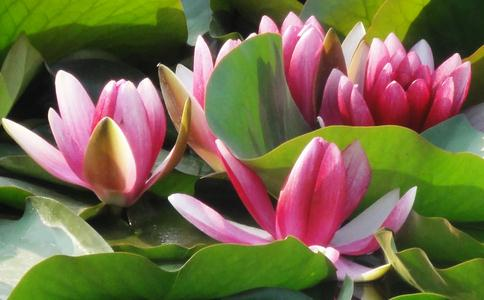

我是从09年3月开始接触
不到一年的时间放生十余次，随善款数次，助印和护持讲经数次(不到十次)
深感佛
放生前时乖命蹇，梦中非人折磨，神经衰弱，夜夜恶梦惊心，无法入睡，总是被鬼压床，心惊肉跳 [/page]
放生后(特别是第一次放生后，梦见站在海淀桥下，从嘴里拔出一根刺状的尖牙，然后吐了几口暗红色的血)
随后就没有非人恶梦迫害了，其实非人也是与我有缘的众生，是成就催促我精进的逆缘菩萨
有时也会被鬼压床，那时一般都是梦中默
放生后逐渐遇见了
对于
放生一段时间后，我还是念不顺大悲咒，不理解也念着拗口
后来又精勤放了几次之后，得到了一本讲述大悲咒的注疏，理解了并且念得很熟很顺，深感菩萨大悲大慈心
放生前，我念
放生后，静心持
末学没毕业呢，也没什么可说的，实在是惭愧，然而佛菩萨加被于我，兼职顺利，物用丰足
放生后，逐渐改变了拈轻怕重，斤斤计较的习气，所以很顺利，有时希望收入可以多那么一点点，就可以放生和使用游刃有余
结果刚好多了那么一点点，称心如意，十分欢喜
4 洗心革面，忏悔前罪 放生带来心境上的变化，一年来种种
行有不得，反求诸己——这句话是太深刻了，自己各种罪报，习气流布，羞愧难当，有何颜面做人?更别提还要贪求人天福报
有时悔的痛哭流涕，如果自己做的不好，改的不彻底，对不起父母养育之恩，也愧对佛菩萨的教诲，不配做
放生前，性情大大咧咧，毛毛躁躁，一惊一乍，动不动就情绪激动，歇斯底里，脸色阴沉，脾气差
放生后，举止有度，神情安详，行走坐卧都不疾不徐，感觉自己更为深沉，也发火(惭愧)，但是可以自己试着控制脾气，观照内心
忍辱是不好修啊!动不动就火烧功德林啊!
6 家人我家人善根深厚，然而业障也多，未有得闻佛法(自我起)，我妈看了我放生结缘拿回的经书后，开始学佛
她慢慢的起了深信，每天看净空老法师的讲经视频，经常助印经书，和
希望爸爸奶奶姥姥和全家所有亲属慢慢地都能学佛得益。
我的同学里也不乏多具善根的人，虽说未能学佛，然而她们听了我点滴的体会，不但不反对，不嘲笑我放生，还随善款或亲自陪我去
我希望她们将来法缘成熟，都学佛，为自己多培
放生不过一年，感应已一言难尽，不可思议，当然其中也多有进退，盘旋良久，还是多靠一次次努力放生才能一步步顺利的前行
愿发大菩提心，大慈悲心，度人度己，觉行
师兄们，同修们，放生是财布施，得
真实不虚!
愿师兄和同修们能看见末学的这一点点心得体会，生信心，生欣慰与欢喜心，愈发精勤放生，普度众生，早证菩提
对于我们论坛里对于放生小组的言论和说法，我说一点自己的想法:这也在我的心里盘桓良久
1 诸佛
看事物要看重点和主流，我们是应该把心主要放在救物命和护生上?还是把精力主要放在对账和讨论账本上?
2 我相信众位师兄也都是一片好意，就类似于不同的
大家都希望放生工作可以越做越好，但是我们应该冷静的检视一下自己，提意见没什么错，自己做的才最重要
别把焦点聚在一丝一毫没做好的工作上，譬如一张白纸，就看见上面的一个黑点不放 ，别让分别心掩盖了慈悲心和平等心
3 我们不管遇到什么，都不能退转和停止放生，也不能丧失对于放生的信心，放，这是救命，也是无条件的
4 祈祷佛菩萨加持，龙天拥护，大家都可以深信佛法，精勤放生，获得无边功德，会向法界诸有情众生
南无阿弥陀佛
南无阿弥陀佛
南无阿弥陀佛